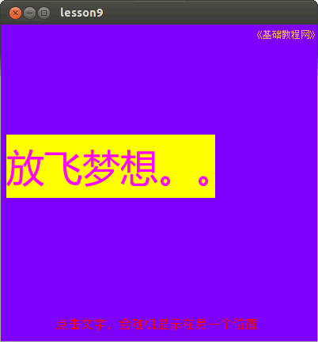

2014-2015 第一学期九年级程序设计教学设计
作者：TeliuTe 来源：基础教程网
九、学会调用函数 返回目录 下一课
（一）教学设计
1、学习目标：
2、注意事项：绕过弯来，既不要跳也不要落，一楼过了二楼
3、教学过程：
1）教师准备学案和板书；
2）学生整队进入，开机抄黑板上笔记；
3）教师讲解板书演示操作；
4）学生打指法、日志、完成操作；
5）教师打勾记录学生指法成绩，检查日志和操作；
注：学生抄完笔记就开始打指法、日志，老师讲完后再继续完成；
（二）板书设计(学生笔记)
09学会调用函数
1.在一个函数中，调用其他函数
2.一个复杂程序分解成小块函数
3.用到哪一块就调用对应的函数
4.程序分为隐藏和显示两部分。
操作图示：

（三）课后记
2014年11月18日 星期二 17:36
第9课 学会调用函数
1、新建lesson9，画一个标签（A），事件M
label1.visible=false
wait 0.5
form_open
2、form_open中输入：（open事件）
label1.x=rnd(0,300)
label1.y=rnd(0,300)
label1.visible=true
--
字母v和r容易混淆，逗号和小数点也容易混淆
输的时候，还有把end给弄丢的，运行会无反应，或者出现提示unexpect实际就是少了end
--
脑子里空空的，不知道标签文本写什么好，1班的学生不爱抄笔记，后面检查一下好多没抄的
然后问标签是什么，笔记上标明了一个A，还在那里问，让找一找笔记上的
--
程序不是很难，3班、4班把意思讲解了一下，一环扣一环，复杂的程序分解成小块，用的时候调用
1班以后先把程序结果演示一下，讲解没人听，个个高高兴兴的，不知道是怎么回事，另2个班沉闷
--
本来想讲for循环，但是没找到合适的例子，for里面不能用wait语句，速度太快，直接就出来了
学生做的还可以吧，小问题让自己检查，同学之间互相帮着做出来了，自己检查不出来，同学帮忙
--
中文还有出不来的，Ctrl+空格，这个以前没讲好，后面一直不会用，想个好的讲解方法句子
让讲过之后就牢记不会忘记才行，免得后面麻烦
返回目录 下一课
本教程由86团学校TeliuTe制作|著作权所有
基础教程网：http://teliute.org/
美丽的校园……
转载和引用本站内容，请保留作者和本站链接。